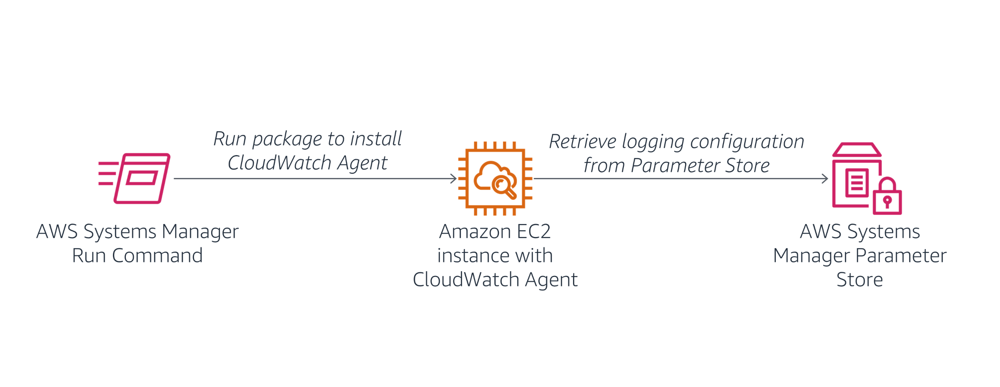
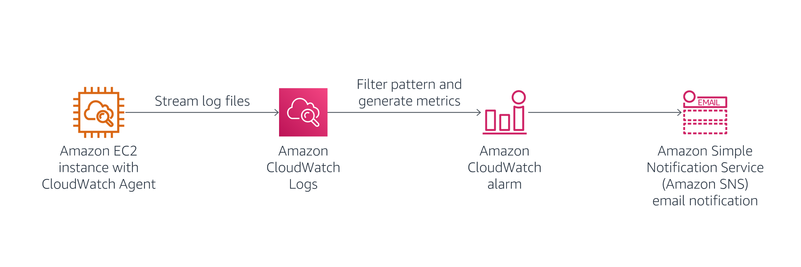
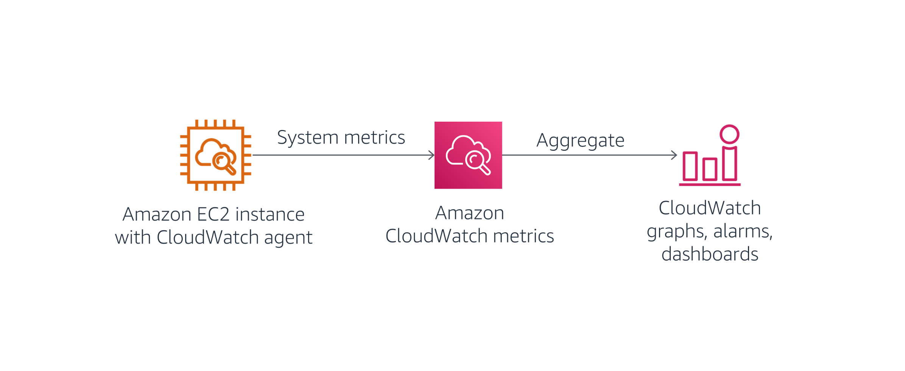
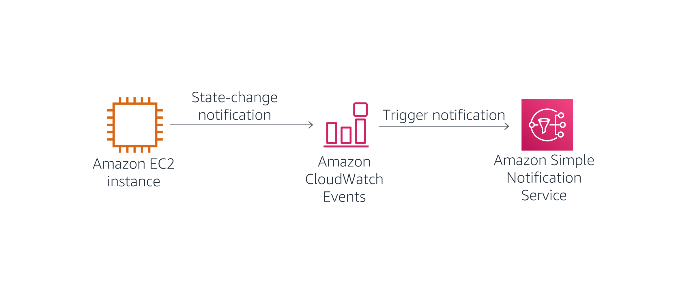

The ability to monitor your applications and infrastructure is critical for delivering reliable, consistent IT services.
Monitoring requirements range from collecting statistics for long-term analysis to quickly reacting to changes and outages. Monitoring can also support compliance reporting by continuously checking that infrastructure is meeting organizational standards.
This lab shows you how to use Amazon CloudWatch Metrics, Amazon CloudWatch Logs, Amazon CloudWatch Events, and AWS Config to monitor your applications and infrastructure.
After completing this lab, you will be able to:
Duration
This lab requires approximately 60 minutes to complete.
A Start Lab panel opens displaying the lab status.
This step opens the AWS Management Console in a new browser tab. The system automatically logs you in.
Tip: If a new browser tab does not open, a banner or icon at the top of your browser typically indicates that your browser is preventing the site from opening pop-up windows. Select the banner or icon, and choose Allow pop-ups.
Do not change the Region during this lab.
You can use the CloudWatch agent to collect metrics from EC2 instances and on-premises servers, including the following:
In this task, you use Systems Manager to install the CloudWatch agent on an EC2 instance. You configure it to collect both application and system metrics.

In the AWS Management Console, on the Services menu, select Systems Manager.
In the left navigation pane, choose Run Command.
If there is no visible navigation pane, choose the icon in the top-left corner to make it appear.
You will use the Run Command to deploy a pre-written command that installs the CloudWatch agent.
Choose Run a Command
Select the button next to AWS-ConfigureAWSPackage (typically appears toward the top of the list).
Scroll to the Command parameters section and configure the following information:
AmazonCloudWatchAgentlatestIn the Targets section, select Choose instances manually, and then under Instances, select the check box next to Web Server.
This configuration installs the CloudWatch agent on the web server.
At the bottom of the page, choose Run
Wait for the Overall status to change to Success. You can occasionally choose refresh toward the top of the page to update the status.
You can view the output from the job to confirm that it ran successfully.
Under Targets and outputs, choose next to the instance, and then click View output.
Expand Step 1 - Output.
You should see the message Successfully installed arn:aws:ssm:::package/AmazonCloudWatchAgent.
If you see the message Step execution skipped due to unsatisfied preconditions: '"StringEquals": [platformType, Windows]'. Step name: createDownloadFolder, then expand Step 2 - Output instead. You can select this option because the instance you are using was created from a Linux AMI. You can safely ignore this message.
You now configure the CloudWatch agent to collect the desired log information. The instance has a web server installed, so you configure the CloudWatch agent to collect the web server logs and general system metrics.
You will store the configuration file in AWS Systems Manager Parameter Store, which the CloudWatch agent can then retrieve.
In the left navigation pane, choose Parameter Store.
Choose Create parameter, and then configure the following information:
Monitor-Web-ServerCollect web logs and system metrics{ "logs": { "logs_collected": { "files": { "collect_list": [ { "log_group_name": "HttpAccessLog", "file_path": "/var/log/httpd/access_log", "log_stream_name": "{instance_id}", "timestamp_format": "%b %d %H:%M:%S" }, { "log_group_name": "HttpErrorLog", "file_path": "/var/log/httpd/error_log", "log_stream_name": "{instance_id}", "timestamp_format": "%b %d %H:%M:%S" } ] } } }, "metrics": { "metrics_collected": { "cpu": { "measurement": [ "cpu_usage_idle", "cpu_usage_iowait", "cpu_usage_user", "cpu_usage_system" ], "metrics_collection_interval": 10, "totalcpu": false }, "disk": { "measurement": [ "used_percent", "inodes_free" ], "metrics_collection_interval": 10, "resources": [ "*" ] }, "diskio": { "measurement": [ "io_time" ], "metrics_collection_interval": 10, "resources": [ "*" ] }, "mem": { "measurement": [ "mem_used_percent" ], "metrics_collection_interval": 10 }, "swap": { "measurement": [ "swap_used_percent" ], "metrics_collection_interval": 10 } } }}Examine the above configuration. It defines the following items to be monitored:
Choose Create parameter
This parameter will be referenced when starting the CloudWatch agent.
You now use another Run Command to start the CloudWatch agent on the web server.
In the left navigation pane, choose Run Command.
Choose Run command
Choose the box, and then select the following:
AmazonCloudWatch-ManageAgentBefore running the command, you can view the definition of the command.
Choose AmazonCloudWatch-ManageAgent (choose the name itself).
A new web browser tab opens that shows the definition of the command.
Browse through the content of each tab to see how a command document is defined.
Choose the Content tab, and scroll to the bottom to see the actual script that will run on the target instance.
The script references the AWS Systems Manager Parameter Store because it retrieves the CloudWatch agent configuration that you defined earlier.
Close the current web browser tab, which should return you to the Run a command tab that you were using earlier.
Verify that you have selected the button next to AmazonCloudWatch-ManageAgent.
In the Command parameters section, configure the following information:
Monitor-Web-ServerThis configures the agent to use the configuration you previously stored in the Parameter Store.
In the Targets section, select Choose instances manually.
In the Instances section, select the check box next to Web Server.
Choose Run
Wait for the Overall status to change to Success. You can occasionally choose refresh toward the top of the page to update the status.
The CloudWatch agent is now running on the instance and sending log and metric data to CloudWatch.
You can use CloudWatch Logs to monitor applications and systems using log data. For example, CloudWatch Logs can track the number of errors that occur in your application logs and send you a notification whenever the rate of errors exceeds a threshold that you specify.
CloudWatch Logs uses your existing log data for monitoring, so no code changes are required. For example, you can monitor application logs for specific literal terms (such as "NullReferenceException") or count the number of occurrences of a literal term at a particular position in log data (such as 404 status codes in a web server access log). When the term you are searching for is found, CloudWatch Logs reports the data to a CloudWatch metric that you specify. Log data is encrypted while in transit and while it is at rest.
In this task, you generate log data on the Web Server and then monitor the logs using CloudWatch Logs.

The Web Server generates two types of log data:
You begin by accessing the web server.
Choose the Details dropdown menu above these instructions, and then choose Show
Copy the WebServerIP value.
Open a new web browser tab, paste the WebServerIP you copied, and then press Enter.
You should see a web server Test Page.
You now generate log data by attempting to access a page that does not exist.
Append /start to the browser URL, and press Enter.
You receive an error message because the page is not found. This is okay! It generates data in the access logs that are being sent to CloudWatch Logs.
Keep this tab open in your web browser, but return to the browser tab showing the AWS Management Console.
From the Services menu, choose CloudWatch.
In the left navigation pane, choose Log groups.
You should see two logs listed: HttpAccessLog and HttpErrorLog.
If these logs are not listed, try waiting a minute, and then choose Refresh.
Choose HttpAccessLog (choose the name itself).
In the Logs streams section, choose the Log stream in the table (choose the name itself). It has the same ID as the EC2 instance that the log is attached to.
Log data should be displayed, consisting of GET requests that were sent to the web server. You can view additional information by choosing to expand the lines. The log data includes information about the computer and the browser that made the request.
You should see a line with your /start request with a code of 404, which means that the page was not found.
This demonstrates how log files can be automatically shipped from an EC2 instance or an on-premises server to CloudWatch Logs. The log data is accessible without having to log in to each individual server. Log data can also be collected from multiple servers, such as an Auto Scaling fleet of web servers.
You now configure a filter to identify 404 Errors in the log file. This error would normally indicate that the web server is generating invalid links that users are choosing.
In the left navigation pane, choose Log groups.
Select the check box next to HttpAccessLog.
From the Actions dropdown menu, select Create metric filter.
A filter pattern defines the fields in the log file and filters the data for specific values.
Paste the following line into the Filter pattern box:
xxxxxxxxxx[ip, id, user, timestamp, request, status_code=404, size]This line tells CloudWatch Logs how to interpret the fields in the log data and defines a filter to find lines only with status_code=404, which indicates that a page was not found.
In the Test pattern section, use the dropdown menu to select the EC2 instance id. It is be similar to i-0f07ab62aae4xxxx9.
Choose Test pattern
In the Results section, choose Show test results.
You should see at least one result with a $status_code of 404. This status code indicates that a page was requested that was not found.
Choose Next
In the Create filter name section, in the Filter name box, enter 404Errors
In the Metric details section, configure the following information:
LogMetrics404Errors1Choose Next. If Next is not enabled, click an empty text field, this will shift focus and enable it.
On the Review and create page, choose Create metric filter
This metric filter can now be used in an alarm.
You now configure an alarm to send a notification when too many 404 Not Found errors are received.
In the 404Errors panel, choose the check box in the top-right corner.
In the Metric filters section, choose Create alarm
Configure the following settings:
In the Metrics section, for Period, select 1 minute.
In the Conditions section, select the following:
5Choose Next
In the Notification section, configure the following:
For Name and description, configure the following settings:
404 ErrorsAlert when too many 404s detected on an instanceChoose Create alarm
Go to your email, look for a confirmation message, and select the Confirm subscription link.
Return to the AWS Management Console.
In the left navigation pane, choose CloudWatch (at the very top).
Your alarm might appear in orange, indicating that there is Insufficient data to trigger the alarm. This alarm appears because no data has been received in the past minute.
You now access the web server to generate log data.
Return to the web browser tab with the web server.
If the web server browser tab is no longer open, choose the Details dropdown menu above these instructions, and then choose Show
Copy the WebServerIP value, and paste it into a new browser tab.
Attempt to go to pages that do not exist by adding a page name after the IP address. Repeat this step at least five times.
For example, enter http://192.0.2.0/start2
Each separate request generates a separate log entry.
Wait 1-2 minutes for the alarm to trigger. In the AWS Management Console, you can occasionally choose Refresh to update the status.
The graph shown on the CloudWatch page should turn red to indicate that it is in the Alarm state.
Check your email. You should have received an email with the subject ALARM: "404 Errors".
This task demonstrates how you can create an alarm from application log data and receive alerts when unusual behavior is detected in the log file. The log file is accessible within CloudWatch Logs to perform further analysis to diagnose the activities that triggered the alarm.
Metrics are data about the performance of your systems. CloudWatch stores metrics for the AWS services you use. You can also publish your own application metrics either via the CloudWatch agent or directly from your application. CloudWatch can present the metrics for search, graphs, dashboards, and alarms.
In the task, you use metrics that CloudWatch provides.

On the Services menu, choose EC2.
In the left navigation pane, choose Instances.
Select the check box next to Web Server.
Choose the Monitoring tab in the lower half of the page.
Examine the metrics presented. You can also select a chart to display more information.
CloudWatch captures metrics about CPU, disk, and network usage on the instance. These metrics view the instance from the outside as a virtual machine but do not give insight into what is running inside the instance, such as measuring free memory or free disk space. Fortunately, you can obtain information about what is happening inside the instance by using information that the CloudWatch agent captures because the CloudWatch agent runs inside the instance to collect metrics.
From the Services menu, select CloudWatch.
In the left navigation pane, choose Metrics. Then expand Metrics and select All metrics.
The lower half of the page displays the various metrics that CloudWatch has collected. AWS automatically generates some of these metrics, and the CloudWatch agent collects some others.
Choose CWAgent, and then choose device, fstype, host, path.
You see the disk space metrics that the CloudWatch agent is capturing.
Above the table, choose CWAgent (in the line that says All > CWAgent > device, fstype, host, path).
Choose host.
You see metrics relating to system memory.
Above the table, choose All (in the line that says All > CWAgent > device, fstype, host, path).
Explore the other metrics that CloudWatch is capturing. These are automatically generated metrics coming from the AWS services that have been used in this AWS account.
You can select metrics that you want to appear on the graph.
CloudWatch Events deliver a near-real-time stream of system events that describe changes in AWS resources. Simple rules can match events and route them to one or more target functions or streams. CloudWatch Events become aware of operational changes as they occur.
CloudWatch Events respond to these operational changes and take corrective action as necessary by sending messages to respond to the environment, activating functions, making changes, and capturing state information. You can also use CloudWatch Events to schedule automated actions that self trigger at certain times using cron or rate expressions.
In this task, you create a real time notification that informs you when an instance is stopped or terminated.

In the left navigation pane expand Events, choose Rules.
If the CloudWatch Events is now EventBridge message is displayed, select Back to CloudWatch Events
Choose Create rule
In the Event Source section, configure the following settings:
In the Targets section on the right, configure the following settings:
At the bottom of the page, choose Configure details
In the Rule definition, configure the following settings:
Instance_Stopped_Terminated
You can configure Amazon Simple Notification Service (Amazon SNS) to send the real time notifications to your phone via SMS, or to your email address. Because configuring SMS messaging requires opening a ticket with AWS Support as well as time to configure the changes to your account, you will use the same email address you used earlier to complete this exercise.
You can read more about configuring SMS messaging with SNS in the Amazon Simple Notification Service Developer Guide.
On the Services menu, choose Simple Notification Service.
In the left navigation pane, choose Topics.
Choose the link in the Name column.
You should see a single subscription associated with your email address. This is the Topic you configured in Task 2.
On the Services menu, choose EC2.
In the left navigation pane, choose Instances.
Select the check box next to Web Server.
Choose Instance state , then Stop instance, and then Stop
The Web Server instance enters the Stopping state. After a minute, it enters the Stopped state.
You should then receive an email with details about the instance that was stopped.
The message is formatted in JSON. To receive a message that is easier to read, you could create an AWS Lambda function that CloudWatch Events triggers. The Lambda function could then format a more readable message and send it via Amazon SNS.
This task demonstrates how to receive real time notifications when infrastructure changes.
With AWS Config, you can assess, audit, and evaluate the configurations of your AWS resources. AWS Config continuously monitors and records your AWS resource configurations and allows you to automate the evaluation of recorded configurations against desired configurations.
With AWS Config, you can review changes in configurations and relationships between AWS resources, dive into detailed resource configuration histories, and determine your overall compliance against the configurations specified in your internal guidelines. With AWS Config, you can simplify compliance auditing, security analysis, change management, and operational troubleshooting.
In this task, you activate AWS Config rules to ensure compliance of tagging and Amazon Elastic Block Store (Amazon EBS) volumes.
On the Services menu, choose Config.
If a Get started button appears, do the following:
This configures AWS Config for initial use. A Welcome to AWS Config window pops up. You can close it.
In the left navigation pane, choose Rules (the one toward the top).
Choose Add rule
In the AWS Managed Rules section in the search field, enter required-tags
Select the button next to required-tags.
Choose Next
You configure the rule to require a project code for each resource.
In the Configure rule page, scroll to Parameters, and configure the following settings:
project (replace any existing value).This rule now looks for resources that do not have a project tag. This takes a few minutes to complete, so continue with the next steps. You do not need to wait.
You now add a rule that looks for EBS volumes that are not attached to EC2 instances.
Choose Add rule
In the AWS Managed Rules section in the search field, enter ec2-volume-inuse-check
Select the button next to ec2-volume-inuse-check.
Choose Next
Choose Next again.
Choose Add rule
Wait until at least one of the rules has completed evaluation. Refresh your browser page if necessary.
If you receive a message that there are No resources in scope, wait a few minutes longer. This message is an indication that AWS Config is still scanning available resources. The message eventually disappears.
Choose each of the rules to view the result of the audits.
Under Resources in scope select Compliant from the list.
The following should be among the results:
AWS Config has a large library of pre-defined compliance checks, and you can create additional checks by writing your own AWS Config rule using Lambda.
Congratulations! You have completed the lab.
A panel appears indicating that DELETE has been initiated... You may close this message box now.
For more information about AWS Training and Certification, see https://aws.amazon.com/training/.
Your feedback is welcome and appreciated.
If you would like to share any suggestions or corrections, please provide the details in our AWS Training and Certification Contact Form.
© 2022 Amazon Web Services, Inc. and its affiliates. All rights reserved. This work may not be reproduced or redistributed, in whole or in part, without prior written permission from Amazon Web Services, Inc. Commercial copying, lending, or selling is prohibited.